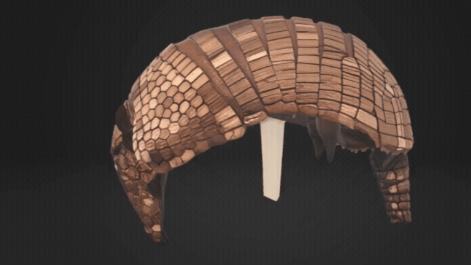

Chaetophractus Nationi (Quirquincho Andino)
El Chaetophractus nationi, conocido comúnmente como Quirquincho Andino, es un mamífero autóctono perteneciente al orden Cingulata y a la familia Chlamyphoridae.
Con un peso de hasta 8 kg y una longitud entre 25 y 50 cm, destaca por su caparazón córneo articulado por placas óseas recubiertas de queratina. Presenta patas robustas con garras adaptadas para excavar en suelos áridos del altiplano y valles interandinos.
Chaetophractus Nationi (Andean Armadillo)
Chaetophractus nationi, commonly known as the Andean Armadillo, is a native mammal belonging to the order Cingulata and the family Chlamyphoridae.
Weighing up to 8 kg and measuring between 25 and 50 cm in length, it is distinguished by its horny carapace articulated by bony plates covered in keratin. It features robust legs equipped with claws adapted for digging in the arid soils of the highlands and Inter-Andean valleys.